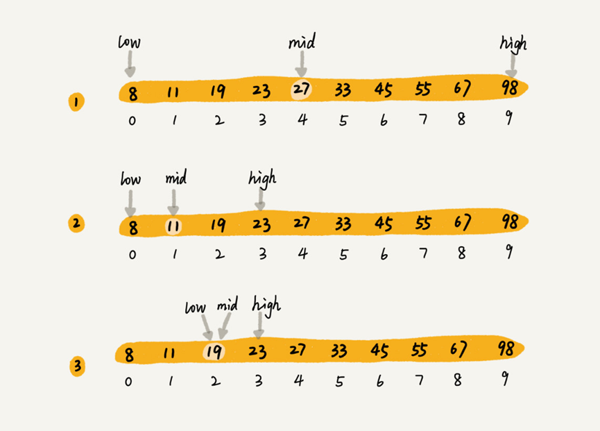

一、什么是二分查找
二分查找针对的是一个有序的数据集合，每次通过跟区间中间的元素对比，将待查找的区间缩小为之前的一半，直到找到要查找的元素，或者区间缩小为
0。
二、时间复杂度分析
时间复杂度
- 假设数据大小是
n，每次查找后数据都会缩小为原来的一半，最坏的情况下，直到查找区间被缩小为空，才停止。
所以，每次查找的数据大小是：$n，n/2，n/4，…，n/(2^k)，…，$这是一个等比数列。
当$n/(2^k)=1$时，k的值就是总共缩小的次数，也是查找的总次数。
而每次缩小操作只涉及两个数据的大小比较，所以，经过k次区间缩小操作，时间复杂度就是$O(k)$。
通过$n/(2^k)=1$，可求得$k=log2n$，所以时间复杂度是$O(logn)$。
认识$O(logn)$
- ①这是一种极其高效的时间复杂度，有时甚至比$O(1)$的算法还要高效。为什么？
- ②因为$logn$是一个非常“恐怖“的数量级，即便$n$非常大，对应的$logn$也很小。
比如$n$等于2的32次方，也就是42亿，而$logn$才32。- ③由此可见，$O(logn)$有时就是比$O(1000)$，$O(10000)$快很多。
三、如何实现二分查找
循环实现
代码实现：
1 | public int bsearch(int[] a, int n, int value) { |
注意事项：
- ①循环退出条件是：
start<=end，而不是start<end。
②mid的取值，使用mid=start + (end - start) / 2，而不用mid=(start + end)/2，因为如果start和end比较大的话，求和可能会发生int类型的值超出最大范围。
为了把性能优化到极致，可以将除以2转换成位运算，即start + ((end - start) >> 1)，因为相比除法运算来说，计算机处理位运算要快得多。
③start和end的更新：start = mid - 1，end = mid + 1，若直接写成start = mid，end=mid，就可能会发生死循环。
递归实现
1 | // 二分查找的递归实现 |
四、使用条件（应用场景的局限性）
- 二分查找依赖的是顺序表结构，即数组。
- 二分查找针对的是有序数据，因此只能用在插入、删除操作不频繁，一次排序多次查找的场景中。
- 数据量太小不适合二分查找，与直接遍历相比效率提升不明显。
但有一个例外，就是数据之间的比较操作非常费时，比如数组中存储的都是长度超过300的字符串，那这是还是尽量减少比较操作使用二分查找吧。- 数据量太大也不是适合用二分查找，因为数组需要连续的空间，若数据量太大，往往找不到存储如此大规模数据的连续内存空间。
五、思考
如何在
1000万个整数中快速查找某个整数？
- ①
1000万个整数占用存储空间为40MB，占用空间不大，所以可以全部加载到内存中进行处理；- ②用一个
1000万个元素的数组存储，然后使用快排进行升序排序，时间复杂度为$O(nlogn)$- ③在有序数组中使用二分查找算法进行查找，时间复杂度为$O(logn)$
如何编程实现“求一个数的平方根”？要求精确到小数点后
6位？
1 | def sqrt(x): |
如果数据使用链表存储，二分查找的时间复杂就会变得很高，那查找的时间复杂度究竟是多少呢？
假设链表长度为
n，二分查找每次都要找到中间点(计算中忽略奇偶数差异):
第一次查找中间点，需要移动指针n/2次；
第二次，需要移动指针n/4次；
第三次需要移动指针n/8次；
……
以此类推，一直到1次为值
总共指针移动次数(查找次数) =n/2 + n/4 + n/8 + ...+ 1，这显然是个等比数列，根据等比数列求和公式：Sum = n - 1.
最后算法时间复杂度是：$O(n-1)$，忽略常数，记为$O(n)$，时间复杂度和顺序查找时间复杂度相同
但是稍微思考下，在二分查找的时候，由于要进行多余的运算，严格来说，会比顺序查找时间慢


评论加载中